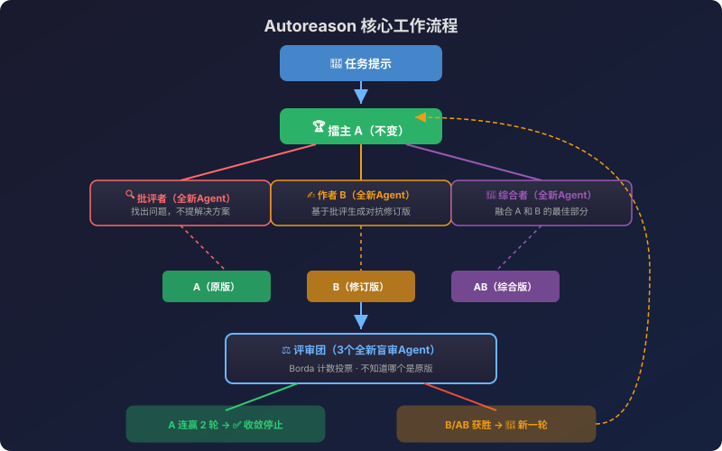
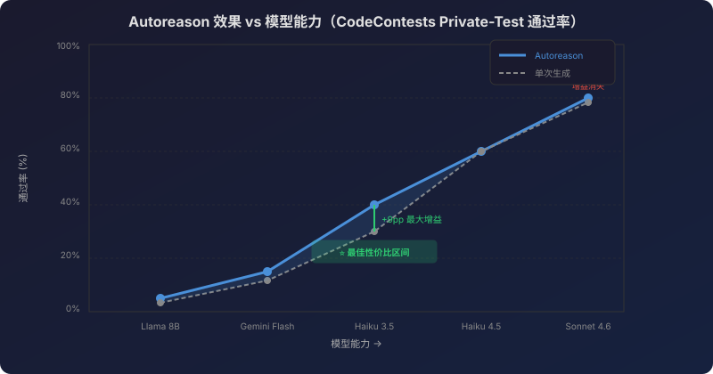

Hermes Agent 最新论文 Autoreason 深度解读：自我精炼终于学会了「适可而止」 - AI知识宇宙
一、为什么你需要关注这篇论文？
如果你用过 ChatGPT 或 Claude 帮你改文案、优化代码，一定遇到过这个问题：
你让 AI 改了一版，觉得不太对，再改一版，越改越离谱，最后发现第一版其实最好。
这不是你的错——这是 LLM 迭代自我精炼（Iterative Self-Refinement） 的结构性缺陷。Nous Research（Hermes Agent 背后的团队）在 2026 年发布的论文 Autoreason: Self-Refinement That Knows When to Stop 正面解决了这个问题。

论文的核心洞察只有一句话：让「什么都不改」成为每一轮竞争中的合法选项，并用盲审投票来决定是否真的需要改。
二、传统自我精炼为什么会失败？
论文指出了三个结构性原因：
| 问题 | 表现 | 根因 |
|---|---|---|
| 提示偏差（Prompt Bias） | 让模型"找问题"，它就一定会"发明"问题 | 对抗性提示导致幻觉 |
| 范围蔓延（Scope Creep） | 每改一轮，文档就膨胀一圈 | 没有约束机制 |
| 缺乏克制（Lack of Restraint） | 模型永远不会说"不需要改" | 讨好型人格 |
这三个问题叠加的结果是：越精炼越差。论文实验显示，标准的 Critique-and-Revise 方法在 15 轮迭代后，Haiku 3.5 的输出质量下降了 59-70%（以字数衡量）。
💡 类比理解：这就像让一个永远不会说"够了"的编辑反复修改你的文章——每一轮都在"改进"，但整体在退化。
三、Autoreason 的核心方法
3.1 三方竞争机制
每一轮迭代产生三个竞争版本：
任务提示 → 当前版本 A（不变的擂主）
↓
┌─── 批评者（全新 Agent）───→ 批评意见
│
├─── 作者 B（全新 Agent）──→ 对抗性修订版（B）
│
└─── 综合者（全新 Agent）───→ 综合版（AB）
↓
评审团（3个全新 Agent，Borda 计数投票）
↓
胜者 → 新擂主（或连续2次 A 获胜则收敛停止）
关键设计： - A 版本永远参赛：「什么都不改」是一等公民 - 每个角色都是全新 Agent：没有共享上下文，杜绝偏见传播 - 盲审：评委不知道哪个是原版、哪个是修改版
3.2 Borda 计数投票
评审团使用 Borda 计数法 而非简单多数投票：
$$d_{t+1} = \arg\max_{c \in {A, B, AB}} \sum_{i=1}^{n} (3 - r_i(c))$$
其中 $r_i(c)$ 是第 $i$ 个评委给候选 $c$ 的排名。这确保了： - 接近的比赛不会退化为抛硬币 - 每个位置都贡献分数 - 平局时倾向擂主（保守策略）
3.3 收敛条件
当擂主 A 连续赢得 k=2 轮时，循环停止。
这是整个方法最优雅的部分——停止条件不是"Agent 累了"或"达到最大轮数"，而是两组独立的盲审评委一致认为当前版本已经是最好的。
四、实验结果深度解析
4.1 写作任务：完美横扫
| 模型 | 方法 | Borda 得分 |
|---|---|---|
| Haiku 3.5 | Autoreason | 42/42（满分） |
| Haiku 3.5 | Critique-and-Revise | 低于单次生成 |
| Haiku 3.5 | 单次生成 | 基线 |
Haiku 3.5 配合 Autoreason 在 3 个任务上取得了完美的 Borda 分数，而标准精炼方法反而让同一模型的输出质量低于不精炼的单次生成。
4.2 竞赛编程：显著提升
在 150 道 CodeContests 题目上：
| 模型 | Autoreason | 单次生成 | 提升 |
|---|---|---|---|
| Sonnet 4.6 | 77% | 73% | +4pp |
| Haiku 3.5 | 40% | 31%（best-of-6） | +9pp |
注意 Haiku 3.5 的对比是 best-of-6 采样（匹配计算量），Autoreason 仍然胜出 9 个百分点。
4.3 模型缩放曲线
论文测试了 5 个模型层级：
Llama 8B → Gemini Flash → Haiku 3.5 → Haiku 4.5 → Sonnet 4 → Sonnet 4.6

核心发现： - 太弱的模型（Llama 8B）：无法生成足够多样的候选，Autoreason 无效 - 中等模型（Haiku 3.5）：效果最大，生成能力 > 自我评估能力 - 强模型（Sonnet 4.6）：生成-评估差距已关闭，Autoreason 增益消失
💡 关键洞察：Autoreason 的价值在于弥合模型的「生成能力」和「自我评估能力」之间的差距。当模型足够强到能准确评估自己的输出时，外部评审机制就不再必要。
4.4 消融实验
| 实验 | 结论 |
|---|---|
| 7 个评委 vs 3 个评委 | 7 个评委收敛速度快 3 倍 |
| 1 个评委 | 噪声大、收敛慢 |
| 去掉 B（对抗版） | 锦标赛崩溃，2-3 轮就收敛 |
| 去掉 AB（综合版） | 同上 |
| 长度控制评估 | 21/28 场胜利，排除了"写得多就赢"的可能 |
五、Autoreason 与 Hermes Agent 生态的关系
Autoreason 不是一个独立的学术论文——它是 Hermes Agent 自我进化体系的核心组件：
Hermes Agent 生态系统
├── hermes-agent（核心代理框架）
├── hermes-agent-self-evolution（DSPy + GEPA 进化优化）
└── autoreason（自我精炼方法论）
↑ 你在这里
在 Hermes Agent 中的实际应用
- 技能优化：Agent 的技能文件通过 Autoreason 循环迭代优化
- 提示进化：系统提示通过三方竞争不断改进
- 代码生成：复杂代码任务使用 Autoreason 确保质量
- 内容创作：主观性任务（文案、文档）的自动精炼
Hermes Agent 的 Self-Evolution 仓库 使用 DSPy + GEPA（遗传-帕累托提示进化）来自动进化技能、工具描述和系统提示，而 Autoreason 提供了底层的精炼方法论。
六、实际使用场景与代码示例
场景一：优化营销文案
# 使用 Autoreason 优化一段产品描述
from autoreason import Tournament
tournament = Tournament(
task_prompt="写一段 50 字以内的 AI 编程工具推广文案",
initial_draft="AI 帮你写代码，效率翻倍",
model="claude-haiku-3.5",
max_passes=15,
convergence_k=2,
num_judges=3
)
result = tournament.run()
print(f"最终版本: {result.winner}")
print(f"收敛轮次: {result.converged_at}")
print(f"A 获胜次数: {result.incumbent_wins}")
场景二：代码精炼
# 在 Hermes Agent 中使用 Autoreason 优化代码
from autoreason import CodeTournament
tournament = CodeTournament(
problem="实现一个高效的 LRU Cache",
test_cases=load_test_cases("lru_cache_tests.json"),
model="claude-sonnet-4",
eval_metric="private_test_pass_rate"
)
best_solution = tournament.run()
场景三：集成到 Hermes Agent 工作流
# 在 Hermes Agent 中直接使用
hermes chat -q "用 autoreason 模式优化我的 README.md"
# 或者在技能进化中使用
python -m evolution.skills.evolve_skill \
--skill code-review \
--iterations 10 \
--refinement-method autoreason
七、与其他自我精炼方法的对比
| 方法 | 停止条件 | 偏见隔离 | 「不改」选项 | 适用场景 |
|---|---|---|---|---|
| Autoreason | 擂主连赢 2 轮 | ✅ 全新 Agent | ✅ 一等公民 | 主观+客观 |
| Critique-and-Revise | 固定轮数 | ❌ 同一 Agent | ❌ 无 | 简单修正 |
| Self-Refine | 固定轮数 | ❌ 同一 Agent | ❌ 无 | 简单修正 |
| Best-of-N | N 次采样 | ✅ 独立采样 | N/A | 有明确指标 |
| Constitutional AI | 原则检查 | ⚠️ 部分 | ❌ 无 | 安全对齐 |
八、论文的局限性与未来方向
已知局限
- 成本：每轮需要多次 API 调用（约 40 次/完整运行），适合高价值任务
- 跨轮累积：单轮内的"不改"保护有效，但用户可能反复重启循环导致过度优化
- 极弱模型无效：Llama 8B 级别的模型无法生成足够多样的候选
- 极强模型无需：Sonnet 4.6 级别的模型自身评估能力已足够
未来方向
- 自适应评委数量：根据任务复杂度动态调整
- 跨轮记忆：防止用户反复重启导致的漂移
- 成本优化：在保持质量的前提下减少 API 调用
- 与 RLHF 结合：将 Autoreason 的偏好信号用于模型训练
九、总结：为什么这篇论文重要？
Autoreason 的贡献不在于让 AI 写得更好——而在于让 AI 知道什么时候该停下来。
在 AI Agent 越来越自主的今天，「克制」比「能力」更稀缺。一个永远在"改进"的 Agent 和一个知道"够了"的 Agent，后者才是你真正想要的同事。
这也是 Hermes Agent 区别于其他 AI Agent 框架的哲学：不是追求单次输出的极致，而是构建一个越用越聪明、知道何时行动何时克制的系统。
参考文献
-
SHL0MS & Hermes Agent. (2026). Autoreason: Self-Refinement That Knows When to Stop. Nous Research. GitHub | 论文 PDF
-
Nous Research. (2026). Hermes Agent Self-Evolution: Evolutionary self-improvement using DSPy + GEPA. GitHub
-
Nous Research. (2026). Hermes Agent: The Agent That Grows With You. 官方文档 | GitHub
-
Ospanov, A. et al. (2025). HERMES: Towards Efficient and Verifiable Mathematical Reasoning in LLMs. arXiv:2511.18760
-
Turing Post. (2026). AI 101: Hermes vs OpenClaw: Local AI Agents Compared. 文章链接
-
NVIDIA Blog. (2026). Hermes Unlocks Self-Improving AI Agents, Powered by NVIDIA RTX PCs and DGX Spark. 文章链接
🛒 相关硬件推荐
运行 Hermes Agent 和 Autoreason 实验需要稳定的开发环境，以下是我们精选的硬件推荐：
京东精选
💡 以下商品来自京东联盟精选，点击链接直达京东购买页面
| 商品推荐 | 推荐理由 | 参考价 |
|---|---|---|
| 胜为六类网线 千兆高速 电脑路由器 2米 | 开发环境有线网络必备，稳定低延迟 | ¥4.5 |
| 宏碁掠夺者 512G SSD M.2 NVMe PCIe 4.0 | AI 模型存储扩容，高速读写 | ¥669 |
| 华硕 27英寸 2K 240Hz 显示器 | 程序员双屏标配，高刷护眼 | ¥1,369 |
| 雷神 电脑显示器屏幕挂灯 护眼 | 夜间编码护眼神器，无屏幕反光 | ¥119 |
| Bose QC消噪耳机Ultra 头戴式降噪 | 沉浸式编码，顶级主动降噪 | ¥1,943 |
淘宝优选
| 商品 | 推荐理由 | 参考价 |
|---|---|---|
| 联想拯救者 Y9000P 2026 | i9+RTX4070，本地跑模型无压力 | ¥9,000-12,000 |
| Dell U2723QE 4K显示器 | USB-C 一线连，90W 供电 | ¥3,000-4,000 |
| 罗技 MX Keys Mini | 紧凑键盘，多设备无缝切换 | ¥500-700 |
本文基于 Autoreason 论文公开版本及 Nous Research 官方仓库编写。如需获取论文完整 PDF，请访问 GitHub 仓库。
推荐搭配装备
善其事，利其器。以下硬件能最大化你的编程体验👇
🔗 通过以上链接购买可支持本站持续运营 🙏